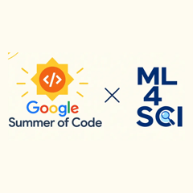
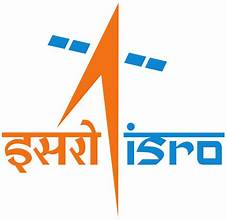
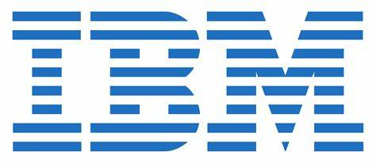
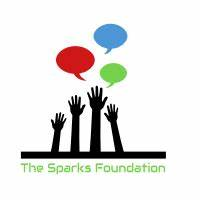

Work experience
.jpg)
Built the document ingestion and RAG pipeline for an on premise AI Teaching Assistant serving 500+ Northeastern students, using Docling, LlamaIndex and Qdrant hybrid search over Canvas course files. Also built AuditBOT, an ethics practice tool for accounting students with an analytics dashboard for faculty, used across 500+ sessions.
Run hands on workshops and pop up events for Adobe's creative tools, reaching 300+ students and growing tool adoption on campus by 40%.

Built an AI Scientist: 6 agents in a closed loop that design, train and refine models for dark matter lensing research. Its architecture search found a 1.19M parameter CNN that beat a 21.28M parameter ResNet baseline with 17.9x fewer parameters. Also built a sandboxed code agent that raised simulation code pass rate from 83.3% to 98.8%.
Built the LLM layer for LiquiFire OS that turns plain English into valid render chains. Benchmarked 5 model setups and showed open weight models matched frontier APIs within noise. Also closed a data leak where 127 of 582 corpus chunks carried AWS keys and customer details into third party model prompts.
Built a Google ADK multi agent forecasting system where 15 agents work across 5 data sources and 100+ countries, with audit logging of every decision. Also built Python pipelines that turned 2TB+ of papers and case studies into searchable datasets.
Completed the Forward program focused on problem-solving, structured communication, and digital collaboration, applying the curriculum to practical project scenarios.
Led ML initiatives across collaborative projects, guiding teams on data pipelines, model development, and deployment to deliver impact-driven solutions for partner organizations.

Conducted research in Signal and Image Processing, developing Land Surface Temperature (LST) and Emissivity models using satellite imagery from diverse global regions under varying weather conditions. Leveraged GANs, particularly Pix2Pix, for automated atmospheric predictions, achieving high performance on unseen data.
Annotated 2,000+ drone images from 100 key Surat junctions for a Government project, classifying vehicles into 7 categories. Analyzed traffic patterns to provide insights for transportation infrastructure planning. Delivered high-quality annotated data, split 70/20/10, to the machine learning team for model training and further analysis.
Gained hands-on experience in data analysis, modeling, and visualization while contributing to real-world projects under the excellent mentorship of the Celebal Team, enhancing proficiency in data-driven decision-making with skills in data visualization, Python, discrete mathematics, data science, and machine learning.

Developed a Mental Fitness Tracker using machine learning techniques to analyze mental health indicators across various countries and users. Applied data preprocessing on 6,840 records and compared ML models, achieving high prediction accuracy to provide personalized mental health insights.
Developed Salesforce applications using Apex and LWC, gaining expertise in automation, security, and workflow enhancements. Set up VS Code and CLI for efficient development, collaborated on real-world projects, implemented APIs, debugged code, and optimized processes in an agile environment.

I harnessed data-driven insights to support critical decision-making processes, bridging the gap between data and business strategies. Contributing to 3 impactful projects and fostering a data-driven culture.
Identified growth opportunities and conducted research to support decision-making, contributing to business growth. Developed skills in corporate communications, Google Analytics, collaboration solutions, strategizing growth, product management, and team building.